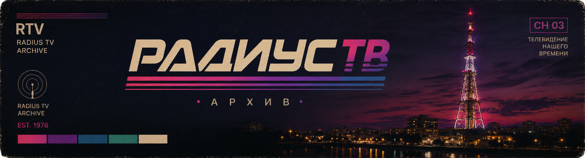

605 Микрорайон
Lost post-punk and coldwave recordings from a forgotten urban archive. Cassette hiss, rehearsal rooms, empty yards and memories of a city that may no longer exist.
ФАЗА / НОЛЬ
Recovered recordings attributed to the fictional Institute of Silence. Sovietwave, coldwave, synthesizers, magnetic tape degradation and laboratory signals.
РИТУАЛ-84
Reconstructed field recordings from expeditions that never officially took place. Northern landscapes, ritual fragments, early electronics and damaged magnetic tape.
РАДИУС-78
A fictional archive of broadcasts from the RADIUS Television Centre. Test signals, announcer recordings, lost programmes and fragments of alternative broadcast history.
The Statement
Some recordings are found. Some are reconstructed. Some should never have existed.
RADIUS ARCHIVE EST. 1976
Music, broadcasts and documents recovered from the edges of memory.
ARCHIVE NOTE RTV
Fictional archives. Real sounds. Lost histories.
RADIUS ARCHIVE ONGOING